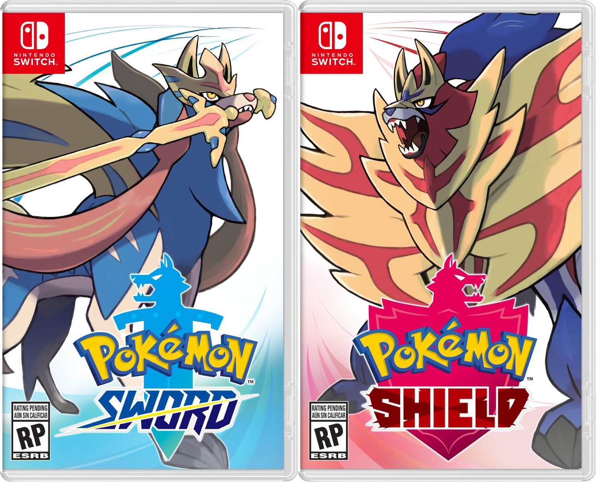
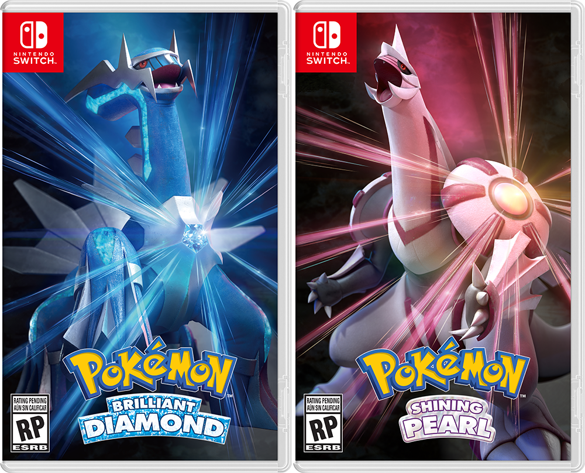
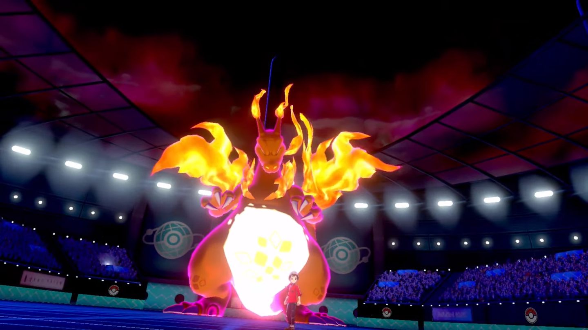
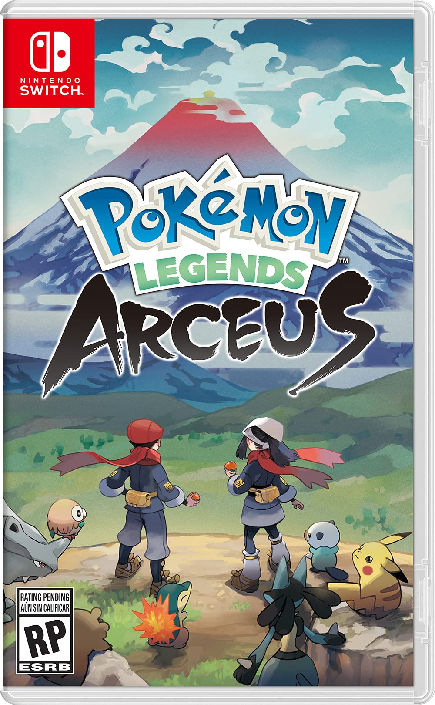
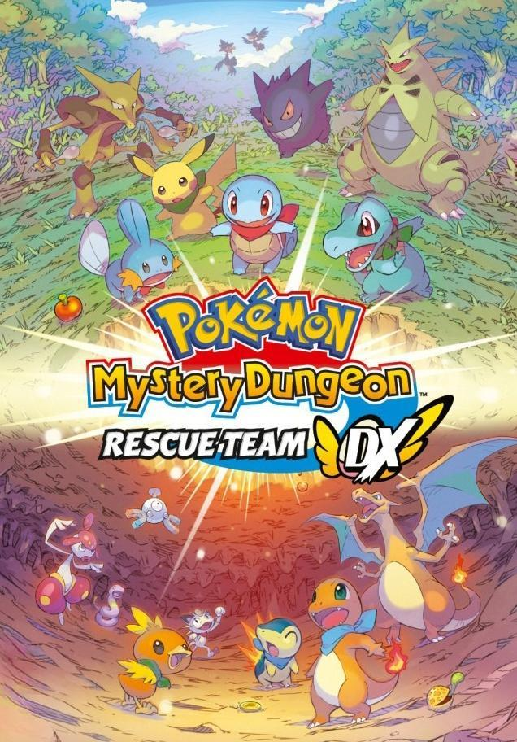
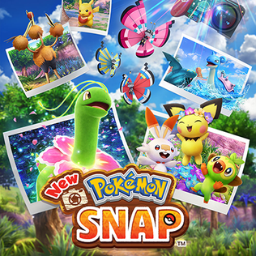

La octava generación de Pokémon comenzó con los títulos Pokémon Espada y Pokémon Escudo, tras ser anunciados el 27 de febrero de 2019 fueron publicados para Nintendo Switch el 15 de noviembre de 2019 en todo el mundo.

Portadas de Pokémon Espada y Pokémon Escudo
Estos juegos también cuentan con dos expansiones de pago, lanzadas en 2020: La isla de la armadura, lanzada el 17 de junio, y Las nieves de la corona, disponible a partir del 23 de octubre.

Portadas de Pokémon Diamante Brillante y Pokémon Perla Reluciente
En esta generación también se incluye un título publicado el 28 de enero de 2022 en Nintendo Switch, Leyendas Pokémon: Arceus, lanzado el 28 de enero de 2022 en Nintendo Switch, sirviendo como precuela a los remakes Pokémon Diamante Brillante y Pokémon Perla Reluciente.
La octava generación abarca la vigésimo tercera, vigésimo cuarta y vigésimo quinta temporadas de la serie, llegando a 1232 capítulos en toda la serie; además de la vigésimo tercera película.
Novedades
La octava generación de la franquicia incorpora algunas novedades y mejora otras introducidas recientemente:
En su primera entrega se añaden 81 nuevas criaturas al salir el juego, y 8 más posteriormente. Leyendas Pokémon: Arceus incorporó otros ocho Pokémon. De estos, 10 son Pokémon legendarios, uno singular y tres formas regionales para los Pájaros legendarios de primera generación.
Starters de Galar
Grookey
Scorbunny
Sobble
Los Pokémon legendarios de estas ediciones son Zacian(Pokémon Espada) y Zamacenta (Pokémon Escudo)
La región en la que se ambienta esta generación es Galar, una región muy diversa basada en Inglaterra y Gales, con el contenido de La isla de la armadura basado en la Isla de Man, y Las nieves de la corona en Escocia.
Mapa de Galar
En estos juegos se incluye la Área Silvestre, un enorme área con 18 zonas que conecta los pueblos y ciudades, y en la que podremos encontrar a otros entrenadores y a la mayoria de Pokémon salvajes de la región.
Siguiendo con las formas regionales introducidas en la generación anterior, se suman 19 formas regionales de Galar, 6 de las cuales pueden evolucionar a Pokémon exclusivos de la región.
La PokéDex sigue contando con Rotom, estando incorporada dentro de un dispositivo SmartRotom, con funciones nuevas además de las típicas, como acoplarse a una bicicleta o usarla sobre el agua.
Se introduce la mecánica de los Dinamax, un fenómeno de la región en el que algunos Pokémon se vuelven enormes. Podemos hacerlo una vez por combate con nuestros Pokémon si tenemos una muñequera Dinamax, durando tres turnos. Otro fenómeno es el Gigamax, exclusivo de unas pocas especies, variando de forma además de tamaño y con un movimiento especial. Esto reemplaza a los movimientos Z y las megapiedras.
Siguiendo la dinámica de Dinamax, existen incursiones en las que varios entrenadores se unen para derrotar a un Pokémon salvaje en este estado.

Forma Gigamax de Charizard
Regresa a la saga la clásica fórmula de gimnasios tras su ausencia en la generación anterior, presentando diez gimnasios en vez de ocho, dos de los cuales dependen de la versión.
En los Centros Pokémon podemos encontrar un Rotomi, una máquina que nos permite hacer Poké Encargos, tareas para que los Pokémon del PC ganen experiencia; o acceder a la Tarjeta de Liga, para guardar las fotos de nuestro entrenador y los que conozcamos.
Los Poké Campamentos nos permiten interactuar con nuestros Pokémon y preparar curry, que sirve para recuperar los PS de nuestros Pokémon, darles experiencia y mejorar nuestra relación con ellos.
Se añaden 81 movimientos y 24 habilidades.
Se puede acceder a las cajas de Pokémon en cualquier momento, dejando de ser necesario tener que usar un PC para ello.
Leyendas Pokémon: Arceus supone un gran cambio, por lo que sus novedades se tratan en su apartado.
Historia
La historia de Pokémon Espada y Pokémon Escudo comienza en Pueblo Yarda, donde estamos viendo un combate de Lionel, el campeón de la Liga Pokémon de Galar, en nuestro SmartRotom. Se presentará en nuestra puerta nuestro amigo y rival Paul, que nos lleva a su casa. Después nos dirigiremos con él a Pueblo Par, donde se encuentra el campeón Lionel, que es el hermano de Paul. De vuelta en su casa, nos ofrecerá el Pokémon inicial.
Poco después, conoceremos a la Profesora Magnolia y su nieta Sonia, que convencen al campeón para dejar al jugador y Paul participar en el desafío de los Gimnasios. Al ir a alistarse conocen a Roxy, una aspirante al desafío, y al Team Yell, fanáticos de Roxy que actúan como los villanos del juego. También conocemos a Rose, el presidente de la liga.
Tras la aventura y conseguir ganar el desafío, antes de poder desafiar a Lionel en la batalla final, el presidente Rose despierta al Pokémon legendario Eternatus, causando un segundo día oscuro después del primero ocurrido hace 3000 años. Con la ayuda de los legendarios Zacian y Zamacenta, conseguimos derrotarlo y Rose se entrega a las autoridades.
Finalmente, triunfamos sobre Lionel para ser los campeones de la liga. También encontramos un postgame en el que nos enfrentamos a dos hermanos que intentan enloquecer a los Pokémon legendarios, consiguiendo capturarlos y que los hermanos sean arrestados. Paul decide entrenar para convertirse en profesor Pokémon con Sonia.
Otros juegos
En la octava generación tenemos títulos relevantes y entregas de subsagas antiguas:
Pokémon Diamante Brillante y Pokémon Perla Reluciente
Pokémon Diamante Brillante y Pokémon Perla Reluciente son los remakes de los videojuegos de cuarta generación Pokémon Perla y Pokémon Diamante, lanzados mundialmente en Switch el 19 de noviembre de 2021.
La historia nos lleva de vuelta a la región de Sinnoh y sigue los hechos originales, incorporando en el juego elementos posteriores como el tipo hada o el acompañante Pokémon, y un estilo artístico moderno, con personajes estilo chibi. Otros cambios incluyen nombres de lugares, caminos en el Parque Hansa en los que aparecen Pokémon legendarios, o la inclusión de elementos que solo estaban presentes en la versión de Pokémon Platino.
Leyendas Pokémon: Arceus

Leyendas Pokémon: Arceus es un videojuego de Nintendo Switch publicado el 28 de enero de 2022 mundialmente. Sirve como precuela de los remakes Pokémon Diamante Brillante y Pokémon Perla Reluciente, aunque la región en la que se ubica se trata de Hisui, que es Sinnoh muchos años atrás. El objetivo del juego es completar la primera Pokédex de Hisui, dejando de lado el enfoque de liga. Los starters de este juego son Rowlet, Cyndaquil y Oshawott.
Según la historia, somos transportados por Arceus, el Dios Pokémon, hasta la región de Hisui. Nos otorga un móvil Arceus, y al despertarnos encontramos al profesor Lavender, miembro del Team Galaxia, un equipo que ha llegado para estudiar la región. En esta región hay Pokémon señoriales, venerados por los dos clanes rivales que ocupas las tierras, el Clan Diamante y el Clan Perla.
Tras vencer cinco Pokémon nobles, los problemas que había con el espacio-tiempo aumentan, y el Equipo Galaxia nos destierra. Vamos a tres grandes lagos a buscar a los guardiantes y, tras superar las pruebas, recibir su ayuda. En el Monte Corona, conseguimos arreglar la grieta espacio-temporal capturando al Pokémon Legendario, Palkia o Dialga según el clan al que hayamos ayudado.
Este juego introduce, entre otras novedades, algunas formas regionales de Hisui, una exploración de cinco regiones totalmente abierta y la posibilidad de capturar Pokémon tanto de forma tradicional como apuntando y lanzando nuestra Pokéball de forma sigilosa.
Al ser un remake, se sigue la historia de las entregas originales, teniendo un estilo gráfico renovado. En la elección de personaje se incorpora la posibilidad de elegir nuestro Pokémon a mano, ademásdel clásico test de personalidad de la subsaga Mundo misterioso. Se incorpora un total de 418 Pokémon, y también se incluyen las megaevoluciones y las formas primigenias.
Se incluyen también los superrivales, de un nivel superior al común, que podemos derrotar para obtener cofres. También hay mejoras de calidad a nivel jugable, entre ellas la posibilidad de seguir jugando si cae debilitado nuestro compañero o un Pokémon escoltado, cosa que nos hacía perder la partida en los juegos originales, o la ampliación del límite de reclutamientos por territorio de cuatro a ocho a la vez.

New Pokémon Snap

New Pokémon Snap es un juego de fotografía lanzado el 30 de abril de 2021 en Nintendo Switch. Es la secuela del juego de Nintendo 64 Pokémon Snap.
De nuevo, el objetivo es fotografiar todos los Pokémon que podamos a lo largo de un recorrido automático, presentando Pokémon de las ocho generaciones, con un total de 234.
La historia sigue a un fotógrafo que ayuda al Profesor Espejo en la región de Lensis, un archipiélago muy variado, con ayuda de un vehículo llamado Neo-One. De igual forma que en la primera entrega, nuestras fotografías serán valoradas según aspectos como el tamaño o pose.
Otras aplicaciones y títulos secundarios de esta generación incluyen Pokémon HOME, Pokémon Café ReMix, Pokémon Smile y Pokémon UNITE.